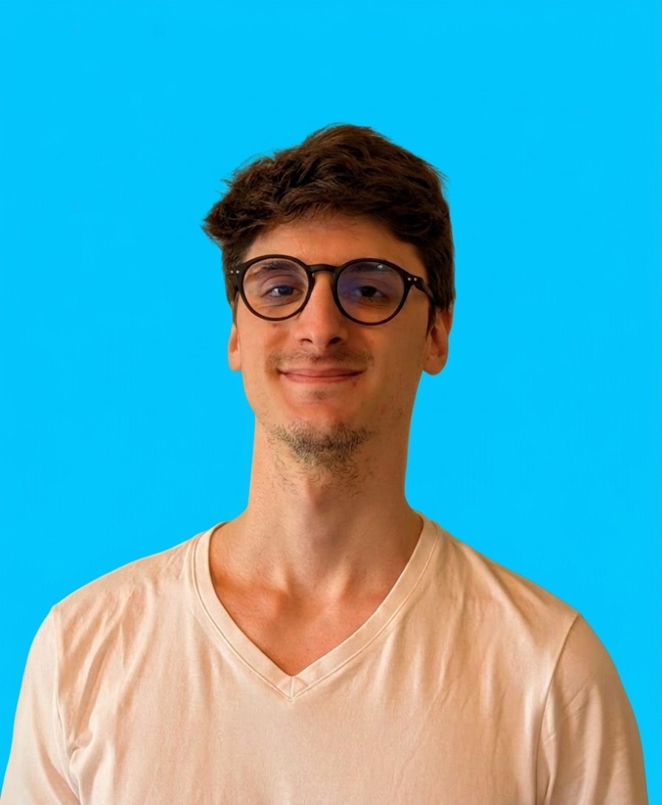

Memory Infrastructure for Claude Code
Built on Claude's native Auto Memory. Adds a search engine, a knowledge graph, and a full session pipeline on top of the notepad Anthropic gave you.
Works With
Every new conversation starts completely blank. Claude has no memory of what you built, decided, or discussed yesterday.
Architectural decisions, debugging findings, and project conventions disappear the moment a session ends.
Teams waste hours re-explaining project structure, conventions, and history to Claude at the start of every session.
Anthropic built the notepad. Claude Total Memory builds the database, the search engine, and the knowledge graph on top of it. Every session builds on everything that came before.
Semantic search across all past sessions with sub-200ms retrieval. Claude finds the exact context it needs, when it needs it.
Entities, relationships, and decisions tracked across 200+ sessions. Over 5,000 entities and 6,000 relationship edges. Fully indexed.
One command closes a session, indexes all content, updates the knowledge graph, and commits everything. Zero manual steps.
Native Model Context Protocol server. Memory tools are available directly inside Claude Code. No context-switching required.
Works on Linux, macOS, and WSL2. Fully portable with one-command setup that configures everything automatically.
Per-project memory isolation, team deployment support, and deterministic workflows designed for production engineering environments.
Claude Code already ships with basic memory. Claude Total Memory adds the search layer, the knowledge graph, and the automated session pipeline on top. No complex configuration. No workflow changes.
One command sets up everything. Claude guides you through environment detection and tier selection. RAG indexing, knowledge graph, and MCP server configured automatically.
./setup.shUse Claude Code normally. Memory captures context, decisions, and code patterns in the background. Nothing changes in your workflow.
claude "continue where we left off"Next session, Claude searches 200+ past sessions in under 200ms. Every decision, every pattern, instantly available. Full architectural context from day one.
/close-session18 architectural decisions across 4 phases of development. Every design choice earned through real-world usage.
A complete infrastructure stack, purpose-built for the Claude ecosystem.
Claude Total Memory ships with specialized agents that handle context retrieval, session management, code quality, and security.
Searches across memory, sessions, and the knowledge graph to gather relevant context. Returns verified summaries with source citations using a 4-phase anti-hallucination pipeline.
Two Haiku agents orchestrate the 11-step session closure pipeline: markdown conversion, AI summary, RAG indexing, knowledge graph extraction, quality checks, and git commit.
Meta-reviewer validates work quality. Synergy-checker ensures cross-file consistency. Fixer closes identified gaps. All work together in an automated review cycle.
Code analyzer maps dependencies and complexity. Security reviewer performs OWASP Top 10 analysis and secrets scanning. Debugging specialist handles root cause analysis.
Every metric below comes from real, production use. Not benchmarks run for a demo.
Designed and developed by Aleksa Mirkovic. Claude Total Memory started as a Maps of Content system in December 2025 -- two months before Anthropic shipped native memory. When Anthropic released Auto Memory (MEMORY.md) in February 2026, Aleksa migrated to it and built the full infrastructure stack on top: session pipeline, RAG search, and knowledge graph.

"I started solving this in December 2025 with an Obsidian MOC system -- two months before Anthropic shipped native memory. When they released Auto Memory, I migrated to it and built the full infrastructure layer on top: search, knowledge graph, session pipeline. Anthropic built the notepad. I built everything else."